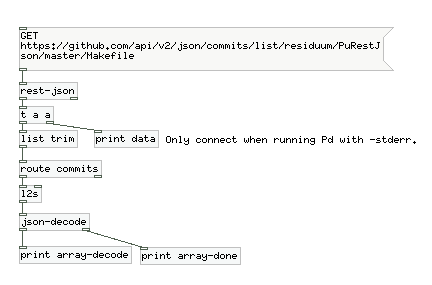
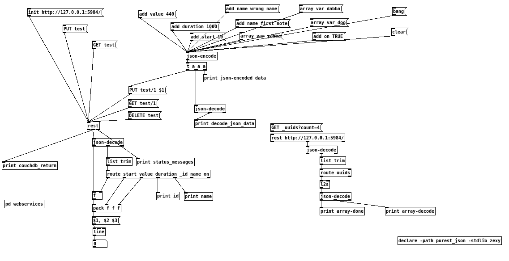

PuREST JSON is a library for connecting Puredata (PD) to HTTP services and encoding and decoding JSON data.
The source code is available from https://github.com/residuum/PuRestJson.
The library is loaded as purest_json, so start it with pd -lib purest_json or the equivalent in your current environment including the path.
This is only a brief introduction to the objects, for a full explanation, see the help patches for them.
The library uses the Pd-extended library template. Therefore, the easiest way to build PuREST JSON is using the compilation methods provided by Pd-extended.
Included with the library are examples. Using these examples, you can see the basic usage of PuREST JSON.
You can use [rest-json] to query webservices. I will explain this querying the history of the Makefile in the repository. You will see the handling of arrays in this example.
As you can see, the webservice from Github returns an object with only one array. This array is then parsed by an instance of [json-decode].
data: list commits [ { "parents": [ { "id": "32656d8170c9660909510100999ae09f749bc9e0" } ]\, "author": { "name": "Thomas Mayer"\, "login": "residuum"\, "email": "thomas@residuum.org" }\, "url": "\\/residuum\\/PuRestJson\\/commit\\/121eee893155d0270d1ce3ad78e5162d0f4cf376"\, "id": "121eee893155d0270d1ce3ad78e5162d0f4cf376"\, "committed_date": "2011-09-21T12:13:36-07:00"\, "authored_date": "2011-09-21T12:13:36-07:00"\, "message": "Used Pd-extended library template"\, "tree": "71022e1263b04d1d5636c5d7c16b6245ce209417"\, "committer": { "name": "Thomas Mayer"\, "login": "residuum"\, "email": "thomas@residuum.org" } }\, { "parents": [ { "id": "ea2b4a170392549c286a784a0a137ad6402758d2" } ]\, "author": { "name": "Thomas Mayer"\, "login": "residuum"\, "email": "thomas@residuum.org" }\, "url": "\\/residuum\\/PuRestJson\\/commit\\/be8d04384403afd836ce5cd8d008ac8075d32b18"\, "id": "be8d04384403afd836ce5cd8d008ac8075d32b18"\, "committed_date": "2011-09-15T15:11:44-07:00"\, "authored_date": "2011-09-15T15:11:44-07:0*
Each array member is then parsed individually by [json-decode], i.e. each member of the object is then output as list on the left outlet, followed by a bang on the right outlet.
array-decode: list parents [ { "id": "32656d8170c9660909510100999ae09f749bc9e0" } ]
array-decode: list author { "name": "Thomas Mayer"\, "login": "residuum"\, "email": "thomas@residuum.org" }
array-decode: list url /residuum/PuRestJson/commit/121eee893155d0270d1ce3ad78e5162d0f4cf376
array-decode: list id 121eee893155d0270d1ce3ad78e5162d0f4cf376
array-decode: list committed_date 2011-09-21T12:13:36-07:00
array-decode: list authored_date 2011-09-21T12:13:36-07:00
array-decode: list message Used Pd-extended library template
array-decode: list tree 71022e1263b04d1d5636c5d7c16b6245ce209417
array-decode: list committer { "name": "Thomas Mayer"\, "login": "residuum"\, "email": "thomas@residuum.org" }
array-done: bang
array-decode: list parents [ { "id": "ea2b4a170392549c286a784a0a137ad6402758d2" } ]
array-decode: list author { "name": "Thomas Mayer"\, "login": "residuum"\, "email": "thomas@residuum.org" }
array-decode: list url /residuum/PuRestJson/commit/be8d04384403afd836ce5cd8d008ac8075d32b18
array-decode: list id be8d04384403afd836ce5cd8d008ac8075d32b18
array-decode: list committed_date 2011-09-15T15:11:44-07:00
array-decode: list authored_date 2011-09-15T15:11:44-07:00
array-decode: list message Removed doxygen.
array-decode: list tree f4b2f6ea08b6dc656c016413d9ca6425da98b974
array-decode: list committer { "name": "Thomas Mayer"\, "login": "residuum"\, "email": "thomas@residuum.org" }
array-done: bang
...
This example will show the usage of diverse HTTP request methods, GET, PUT, and DELETE. You will also see, how you can add data to PUT requests.
A CouchDB running on the same computer is implied.
Here is the output from the main example in examples/purest-json-test.pd with explanations.
First, we create the database and get info about the database:
status_messages: list PUT 201 0 status_messages: list GET bang couchdb_return: list db_name test couchdb_return: list doc_count 0 couchdb_return: list doc_del_count 0 couchdb_return: list update_seq 0 couchdb_return: list purge_seq 0 couchdb_return: list compact_running 0 couchdb_return: list disk_size 79 couchdb_return: list instance_start_time 1.33686e+15 couchdb_return: list disk_format_version 5 couchdb_return: list committed_update_seq 0
After that, we build a JSON document and store it in the database:
json-encoded data: symbol { "value": "440"\, "duration": "1000"\, "start": "10"\, "name": "first note"\, "var": [ "yabba"\, "dabba"\, "doo" ]\, "on": "TRUE" }
decode_json_data: list value 440
decode_json_data: list duration 1000
decode_json_data: list start 10
decode_json_data: list name first note
decode_json_data: list var [ "yabba"\, "dabba"\, "doo" ]
decode_json_data: list on 1
status_messages: list PUT 201 0
Then we query the database for the stored document and use it to drive a simple ramp:
status_messages: list GET bang id: 1 couchdb_return: list _id 1 couchdb_return: list _rev 1-b7a3cb13c20812a4c7845e9a86f92099 couchdb_return: list value 440 couchdb_return: list duration 1000 couchdb_return: list start 10 name: first note couchdb_return: list name first note couchdb_return: list var [ "yabba"\, "dabba"\, "doo" ] couchdb_return: list on 1
In the end we delete the database:
status_messages: list DELETE bang couchdb_return: list ok 1
Author: Thomas Mayer
Copyright (c) 2012 Thomas Mayer
Permission is hereby granted, free of charge, to any person obtaining a copy of this software and associated documentation files (the "Software"), to deal in the Software without restriction, including without limitation the rights to use, copy, modify, merge, publish, distribute, sublicense, and/or sell copies of the Software, and to permit persons to whom the Software is furnished to do so, subject to the following conditions:
The above copyright notice and this permission notice shall be included in all copies or substantial portions of the Software.
THE SOFTWARE IS PROVIDED "AS IS", WITHOUT WARRANTY OF ANY KIND, EXPRESS OR IMPLIED, INCLUDING BUT NOT LIMITED TO THE WARRANTIES OF MERCHANTABILITY, FITNESS FOR A PARTICULAR PURPOSE AND NONINFRINGEMENT. IN NO EVENT SHALL THE AUTHORS OR COPYRIGHT HOLDERS BE LIABLE FOR ANY CLAIM, DAMAGES OR OTHER LIABILITY, WHETHER IN AN ACTION OF CONTRACT, TORT OR OTHERWISE, ARISING FROM, OUT OF OR IN CONNECTION WITH THE SOFTWARE OR THE USE OR OTHER DEALINGS IN THE SOFTWARE.